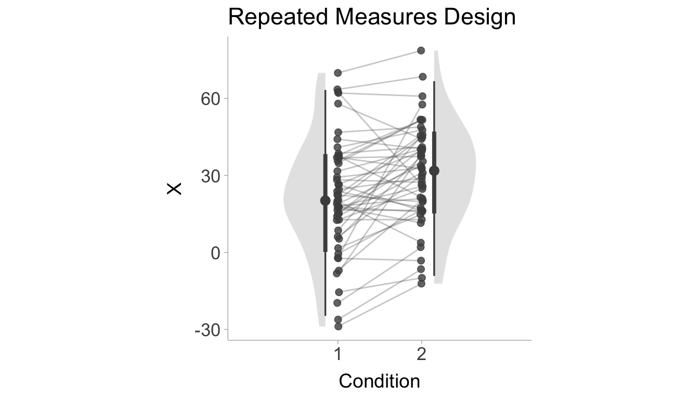
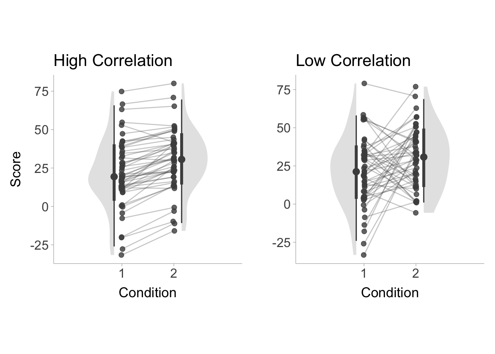

This effect sizes and confidence intervals collaborative guide aims to provide students and early-career researchers with hands-on, step-by-step instructions for calculating effect sizes and confidence intervals for common statistical tests used in psychology, social sciences and behavioral sciences, particularly when original data are not available and when reported information is incomplete. It also introduces general background information on effect sizes and confidence intervals, as well as useful R packages for their calculation. Many of the methods and procedures described in this Guide are based on R or R-based Shiny Apps developed by the science community. We were motivated to focus on R as we aim to maximize the reproducibility of our research outcomes and encourage the most reproducible study planning and data analysis workflow, though we also document other methods whenever possible for the reference of our readers. We regularly update this open educational resource, as packages are updated frequently and new packages are developed from time to time in this rapidly changing Open Scholarship era.
All are encouraged to contribute to this Guide. Please note that this Guide is in continuous development such that it will remain a work in progress for an indefinite period of time. This is intended because we hope the Guide to always reflect the state of the art on the topics of effect sizes and confidence intervals.
Notes
Please use the headings and style as set forth in this document. You can use keyboard shortcuts such as Ctrl + Alt + 1/2/3. The normal text is in Times New Roman font, font size 11. The codes are formatted using the Code Blocks add-on of Google Docs, github theme, font size 8.
Use the Suggesting mode rather than the Editing mode. Suggesting is now the default mode for this document. Therefore, please do not hesitate to correct mistakes or modify the contents directly.
Add a comment to the document if you find anything missing or improper, or if you feel that things are better organized in a different way. We appreciate your suggestions. If you have any questions, please also add a comment. We will reply and seek to clarify in the document body.
Please make proper citations (in APA 7th format) and provide relevant links when you refer to any source that is not your own.
Credit and authorship
If you believe you have made sufficient contribution that qualifies you as an author, and you would like to be listed as an author of this Guide, please do not hesitate and list your name and contact information below. The administrators (Q.-Y. X., S. K. Y., and G. F.) of this Guide will verify your contribution and add you to the author list. We welcome comments from any person, regardless of whether they want to be an author. You are also welcome to request content to be added to this Guide (please see the Things to add to the guide section in the end).
The authorship order is such that Q.-Y. X. and S. K. Y. will be the first two authors and G. F. will be the last and the corresponding author. All other contributors will be listed alphabetically in the middle and are all considered joint third authors. Contributors are by default given investigation, writing - original draft, and writing - review & editing CRediT authorship roles. It is possible to take on more roles if contributors prefer. Any change in this authorship order rule will have to be approved by all who are already listed as an author.
Evaluating and Interpreting Confidence Intervals
Effect sizes quantify the magnitude of effects (i.e., strength of a relationship, size of a difference), which are the outcomes of our empirical research. Effect sizes are by no means a new concept. However, reporting them remained largely optional for many years, and only until recently does it become a community standard: scientists now see reporting effect sizes (in addition to the traditional statistical significance) as a must and journals also start to require such reporting. Notably, in 2001 and 2010, The Publication Manual of the American Psychological Association 5th and 6th editions emphasized that it is “almost always necessary”1 to report effect sizes (Association 2010, 34; see Fritz, Morris, and Richler 2012, which provides a comprehensive summary on history and importance of effect size reporting).
Effects sizes can be grouped in broad categories as (1) raw effect sizes, and (2) standardized effect sizes. The raw effect sizes are summary of the results that are expressed in the same units as the raw data. For example, when kilograms are measured, a raw effect size reports a measure in kilogram. Consider the effect of a diet on a treatment group; a control group receives no diet. The change in weight can be expressed as the mean difference between the group. This measure is also in kg and so is a raw effect size. Standardized effect sizes are expressed on a standardized scale which has no longer any unit but which have a universal interpretation. A z score is an example of a standardized measure. This document is concerned exclusively on standardized effect sizes.
Benchmarks
What makes an effect size “large” or “small” is completely dependent on the context of the study in question. However, it can be useful to have some loose criterion in order to guide researchers in effectively communicating effect size estimates. Jacob Cohen (1988), the pioneer of estimation statistics, suggested many conventional benchmarks (i.e., how we refer to an effect size other than using a number) that we currently use. However, Cohen (1988) noted that labels such as “small”, “medium”, and “large” are relative, and in referring to the size of an effect, the discipline, the context of research, as well as the research method and goals, should take precedence over benchmarks any time it’s possible. There are general differences in effect sizes across different disciplines, and within each discipline, effect sizes differ depending on study designs and research methods (Schäfer and Schwarz 2019) and goals; as Glass, McGaw, and Smith (1981) explains:
Depending on what benefits can be achieved at what cost, an effect size of 2.0 might be “poor” and one of .1 might be “good.”
Therefore, it is crucial to recognize that benchmarks are only general guidelines, and importantly, out of context. They also are tend to attract controversy (Glass, McGaw, and Smith 1981; Kelley and Preacher 2012; Harrell 2020). Note that empirical benchmarks have been suggested by researchers. For social psychology, these alternative benchmarks obtained through meta-analyzing the literature (for example, this and this; see this Twitter thread for a summary) are typically smaller than what Cohen put forward. Please refer to the table below:
It should be noted that small/medium/large effects do not necessarily mean that they have small/medium/large practical implications (for details see, Coe 2012; Pogrow 2019). These benchmarks are more relevant for guiding our expectations. Whether they have practical importance depends on contexts. To assess practical importance, it will always be desirable for standardized effect sizes to be translated to increase/decrease in raw units (or any meaningful units) or a Binomial Effect Size Display (roughly, differences in proportions such as success rate before and after intervention).
Please also note that only zero means no effect. An effect of the size .01 is an effect, but a very small (Sawilowsky 2009), and likely unimportant, one. It makes sense to say that “we failed to find evidence for rejecting the null hypothesis,” or “we found evidence for only a small/little/weak-to-no effect” or “we did not find a meaningful effect”. It does not make sense to say, “we found no effect.” Purely by the random nature of our universe, it is hard to imagine that we can obtain a sharp zero-effect result. This is also related to the crud factor, which refers to the idea that “everything correlates with everything else” (Orben and Lakens 2020, 1; Meehl 1984), but the practical implication of very weak/small correlations between some variables may be limited, and whether the effect is reliably detected depends on statistical power.
Reporting Effect Sizes
Transparency
When reporting effect sizes and their calculations, you should prioritize transparency and reproducibility. No matter what tool you used to calculate your effect size (R is the most recommended tool here), you must make sure that others can easily follow your procedures and obtain the same results. This means that if you use online calculators (which is discouraged) or standalone programs (JAMOVI is most recommended; you can also use JASP, which however does not allow access to syntax at this moment), you should include screenshots that capture the input and output, with clear explanations. If you use R, Python or other programming languages, you should copy-and-paste your codes into your supplementary document (or submit your scripts to open online repositories), ideally with annotations and comments explaining the codes. inputs and outputs.
Directionality
Some effect sizes are directional (e.g., Cohen’s \(d\)), which means that they can be positive or negative. Their signs carry important information, and therefore cannot be omitted. When you report these effect sizes, make it clear what is compared to what (i.e., the direction of comparison). Better still, make sure your comparison is inline with the theory. For instance, a theory predicts that your group X should score higher on an item than your Group Y,7 you should hypothesize accordingly that Group X will have a higher mean than Group Y on the item, and subtract mean(Y) from mean(X) (rather than the other way around) to obtain the mean difference. You should then expect your \(t\) statistic to be positive, and your \(d\) value as well. In other words, avoid reporting anything like \(t\) = -5.14, \(d\) = 0.36, where the signs of the statistics do not match.
Precision
Effect sizes may be very precisely estimated from the available data, the used methodology, and how the population was sampled. It might also be estimated with little confidence on the resulting number. This may be the case for example when the sample is very small, when the population displays a lot of variability, when a between-group design is used instead of a paired-sample design, and finally, when clustered sampling is used instead of randomized sampling. Precision can be estimated using various tools, but probably the most commonly used one is the Confidence intervals. This interval has a confidence level, frequently 95%.
Interpreting Confidence Intervals
What is the correct interpretation of a confidence interval? Imagine you conducted a study where you compared two groups. You obtained a Cohen’s \(d\) = 0.3, 95% CI [0.2, 0.4]. How do you interpret this confidence interval?
Confidence intervals are yielded by a certain procedure, such that when the procedure is repeatedly applied to a series of hypothetical datasets drawn from the studied population/populations, it yields intervals that contain the true parameter value (in our example, it means the true difference between the two groups) in 95% of the cases.
In colloquial terms, if we conduct this research over and over (repeating the same sampling procedure, administering the same experimental manipulation, conducting the same statistical analysis, etc.), because of sampling variability (our samples are slightly different at each time), we will get different Cohen’s \(d\) values. For each of these \(d\) values, we calculate a 95% interval. Then, among all these many intervals, we expect that 95% of them will contain the true \(d\), which we never know exactly.
There is also a common criticism levied against the confidence interval interpretation: “There is a 95% probability that the true parameter exists within the 95% confidence interval”. However this criticism is unwarranted in the specific case of a single observed confidence interval, that is, as long as there is a single realized confidence interval sampled from the population, this interpretation is fine (Vos and Holbert 2022). It is important to note however, this interpretation is incorrect when there are multiple realized confidence intervals. The criticized interpretation also tends to be more practical than the interpretation using repeated sampling, the following example described by Vos and Holbert (2022) illustrates this,
The distinction between these interpretations can be understood with the simple example of the probability of rolling a ‘6’ with a fair die. The probability is 1/6 because if you roll the die repeatedly the proportion of times that the face with ‘6’ comes up will be come very close to 1/6. Or, the probability is 1/6 because it is equivalent to a random selection from an urn where exactly one of 6 balls is labelled with ‘6’. The distinction in this simple example is less useful since repeatedly rolling a die is less problematic than repeatedly conducting the same randomized trial.
For further reading on confidence interpretations, see Hoekstra et al. (2014) and Morey et al. (2016).
Reporting Confidence Intervals
Confidence intervals must be calculated and reported for every effect size that you obtained and mentioned in your manuscript. If you are doing a replication and your target article/study did not report CIs for its effect sizes, you should calculate CIs and report them.
Normally, we calculate 95% confidence intervals (i.e., 95% of such intervals are expected to contain the true parameter value if we conduct an infinite number of identical studies). Nonetheless, for some effect sizes (e.g., eta-squared, partial eta-squared, R-squared), we calculate 90% confidence intervals. This is because η² is squared and always positive, and F-tests are one-sided. Reporting 95% CI for eta squared may result in situations in which the CI includes zero but the p-value falls below .05, whereas reporting 90% CI prevents such a problem. For further information regarding this issue, read Daniel Lakens blog on confidence intervals and Steiger (2004).
Confidence intervals should be reported immediately after an effect size, e.g., Cohen’s d = 0.40, 95% CI [0.20, 0.60]. After the first time reporting them in a manuscript, every subsequent CI can be simply denoted by brackets without the “95% CI” preceding it.
Unless you are measuring something that is meaningful in real life (e.g., income, years of experience, amount that a person is willing to donate), please make sure that the CI you calculated is a CI of the effect size, not of other statistics, such as the test statistics or mean difference in raw units.
If you see one of the following:
Your effect size estimate does not fall in your confidence interval: you certainly have an issue.
One of your CI bound is “infinite”
Your effect size estimate is not included within your CI (for comparison between two groups): You have an issue, check carefully. For means and for difference in means, the estimate should be precisely the midpoint of your CI; for other statistics (e.g., correlation, proportion, frequency, standard deviation), one arm might be longer than the other so the estimate may not be the midpoint.
For further reading related to the calculaton and reporting of effect sizes and confidence intervals, see Steiger (2004) and Lakens (2014).
Useful R Packages
The following R packages are handy for effect size and CI calculations, conversions among different effect sizes, and conversion of test statistics to effect sizes. If you use one of the packages below, please make sure you cite them to give the authors their due credit! To obtain citations for packages, you can use the citation() function and input the name of the package as a string.
MOTE(Buchanan et al. 2019): This is a highly recommended package for calculating effect sizes, which is capable of handling a wide variety of effect sizes in the difference family (the d family) and variance-overlap family (r, eta, omega, epsilon). The functions also provide non-central confidence intervals for each effect size and output in APA style in LaTeX. MOTE has an online shiny application (doomlab.shinyapps.io/mote/). The CRAN project can be found here: cran.r-project.org/package=MOTE.
effectsize(Ben-Shachar, Lüdecke, and Makowski 2020): This package is particularly useful in data analysis. A major advantage of this package is that it takes in many different model objects and directly outputs effect sizes and CIs. It also does some conversion. The CRAN project can be found here: cran.r-project.org/package=effectsize.
MBESS(Kelley 2022): One of the most comprehensive and useful packages for effect size and confidence interval calculations. It provides functions that can calculate ESs and CIs from test statistics and the p-value. The CRAN project can be found here: cran.r-project.org/package=MBESS.
metafor(Viechtbauer 2010): Probably the most comprehensive meta-analysis package currently available. Includes the function, escalc(), that calculates various types of effect sizes from test-statistics, summary statistics, and more. The CRAN project can be found here: cran.r-project.org/package=metafor.
psych(William Revelle 2023): One of the most comprehensive and general packages for common statistical procedures in psychology research. It also includes some effect size and CI calculation functions (e.g., cohen.d()). The CRAN project can be found here: cran.r-project.org/package=psych.
esc(recommended for d, phi, and conversion among effect sizes, Lüdecke 2019): This package can help convert among different effect sizes (pp. 4-12 in the reference manual). It’s also helpful when only incomplete information (e.g., only descriptives, or only p-values) have been provided in the paper, and we want to calculate effect sizes from them. Another package that provides similar conversion functions is the compute.es package. The CRAN project can be found here: cran.r-project.org/package=esc.
psychmeta(Dahlke and Wiernik 2019): This package is mainly used for psychometric meta-analyses. It has a function for converting different effect sizes/test statistics (convert_es, p. 38 in the reference manual), including \(r\), \(d\), \(t\)-statistic (and its p-value), \(F\) (and its p-value in two-group one-way ANOVA), chi-squared (one degree of freedom), etc., to \(r\), \(d\) and the common language effect sizes (CLES, A, AUC). The CRAN project can be found here cran.r-project.org/package=psychmeta.
effsize(Torchiano 2020): This is a relatively lightweight package that handles d, g, Cliff delta, and Vargha-Delaney A). The CRAN project can be found here: cran.r-project.org/package=effsize.
MAd(W. T. Hoyt 2014): This package is a collection of functions for conducting a meta-analysis with mean differences data. It also provides conversion functions. The CRAN project can be found here: cran.r-project.org/package=MAd.
TOSTER(Daniel, Lakens, and aut 2017): This package is used for equivalence testing. It contains many functions to test for differences in effect sizes along with other useful functions for effect size comparisons. The CRAN project can be found here: cran.r-project.org/package=TOSTER.
DeclareDesign(Blair et al. 2019): This simulation framework can be used to assess whether procedures for calculating confidence intervals are valid and can be used for arbitrary designs. The diagnose_design() function calculates coverage for designs with estimation strategies that produce confidence intervals. The CRAN project can be found here: cran.r-project.org/package=DeclareDesign.
Standardized Effect Sizes for Mean Differences
T-tests are the most commonly used statistical tests for examining differences between group means, or examining a group mean against a constant. Calculating effect sizes for t-tests is fairly straightforward. Nonetheless, there are cases where crucial figures for the calculation are missing (which happens quite often in older articles), and therefore we document methods that make use of partial information (e.g., only the M and the SD, or only the t-statistic and df) for the calculation. There are multiple types of effect sizes used to calculate standardized mean differences (i.e., Cohen’s \(d\)), yet researchers very often do not identify which type of \(d\) value they are reporting (see Lakens 2013). Here we document the equations and code necessary for calculating each type of \(d\) value compiled across multiple sources (Becker 1988; Cohen 1988; Lakens 2013; Caldwell, n.d.; Glass, McGaw, and Smith 1981). A \(d\) value calculated from a sample will also contain sampling error, therefore we will also show the equations to calculate the standard error. The standard allows us to then calculate the confidence interval. For each formulation in the sections below, the confidence interval will be able to be calculated in the same way, that is,
\[
\text{Lower Bound} = d - 1.96\times SE
\]
\[
\text{Upper Bound} = d + 1.96\times SE
\]
Lastly, we will supply example R code so you can apply to your own data.
Single Group Designs
For a single group design, we have one group and we want to compare the mean of that group to some constant, \(C\) (i.e., a target value). The standardized mean difference for a single group can be calculated by,
\[
d_s = \frac{M-C}{S_1}
\]
A positive \(d_s\) value would indicate that the mean of group 1 is larger than the target value, \(C\). This formulation assumes that the sample is drawn from a normal distribution. The standardizer (i.e., the denominator) is the sample standard deviation. The corresponding standard error for \(d_s\) is,
In R, we can use the d.single.t function from the MOTE package to calculate the single group standardized mean difference.
# Install packages if not already installed:# install.packages('MOTE')# Cohen's d for one group# For example:# Sample Mean = 30.4, SD = 22.53, N = 96# Target Value, C = 15library(MOTE)stats <-d.single.t(m =30.4,u =15,sd =22.53,n =96)# print just the d value and confidence intervalsdata.frame(d =apa(stats$d), dlow =apa(stats$dlow), dhigh =apa(stats$dhigh))
d dlow dhigh
1 0.684 0.460 0.904
As you can see, the output shows that the effect size is \(d_s\) = 0.68, 95% CI [0.46, 0.90]. Note the apa function in MOTE takes a value and returns an APA formatted effect size value (i.e., leading zero and three decimal places).
Two Groups Design
Standardize by Pooled Standard Deviation (\(d_p\))
For a two group design (i.e., between-groups design), we want to compare the means of two groups (group 1 and group 2). The standardized mean difference between two groups can be calculated by,
\[
d_p = \frac{M_1-M_2}{S_p}.
\]
A positive \(d_p\) value would indicate that the mean of group 1 is larger than the mean of group 2. Dividing the mean difference by the pooled standard deviation, \(S_p\), is the classic formulation of Cohen’s \(d\). The pooled standard deviation, \(S_p\), can be calculated as the square root of the average variance (weighted by the degrees of freedom, \(df=n-1\)) of group 1 and group 2:
In R, we can use the d.ind.t function from the MOTE package to calculate the two group standardized mean difference. Since we have already loaded in the MOTE package, we do not need to again.
# Cohen's d for two independent groups# given means and SDs# For example:# Group 1 Mean = 30.4, SD = 22.53, N = 96# Group 2 Mean = 21.4, SD = 19.59, N = 96stats <-d.ind.t(m1 =30.4,m2 =21.4,sd1 =22.53,sd2 =19.59,n1 =96,n2 =96,a =0.05)# print just the d value and confidence intervalsdata.frame(d =apa(stats$d), dlow =apa(stats$dlow), dhigh =apa(stats$dhigh))
d dlow dhigh
1 0.426 0.140 0.712
The output shows that the effect size is \(d_p\) = 0.43, 95% CI [0.14, 0.71].
Standardize by Control Group Standard Deviation (\(d_{\Delta}\))
When two groups differ substantially in their standard deviations, we can instead standardize by the control group standard deviation (\(S_C\)), such that,
\[
d_{\Delta} = \frac{M_T-M_C}{S_C}.
\]
Where the subscripts, \(T\) and \(C\), denotes the treatment group and control group, respectively. This formulation is commonly referred to as Glass’ \(\Delta\)(Glass 1981). The standard error for \(d_{\Delta}\) can be defined as,
Notice that when we only standardize by the standard deviation of the control group (rather than pooling), we he will have less degrees of freedom (\(df=n_C-1\)) and therefore more sampling error than we do when we divide by the pooled standard deviation (\(df= n_T + n_C - 2\)).In R, we can use the delta.ind.t.diff function from the MOTE package to calculate \(d_\Delta\).
# Cohen's dz for difference scores# given difference score means and SDs# For example:# Control group Mean = 30.4, SD = 22.53, N = 96# Treatment group Mean = 21.4, SD = 19.59, N = 96# correlation between conditions: r = .40stats <-delta.ind.t(m1 =30.4,m2 =21.4,sd1 =22.53,sd2 =19.59,n1 =96,n2 =96,a =0.05)# print just the d value and confidence intervalsdata.frame(d =apa(stats$d), dlow =apa(stats$dlow), dhigh =apa(stats$dhigh))
d dlow dhigh
1 0.399 0.140 0.712
Repeated Measures Designs
In a repeated measures design, the same subjects are measured on two separate occasions and we want to know the mean difference between those two occasions. An example of this would be in a pre/post comparison where subjects are tested before and after undergoing some treatment (see Figure 1 for a visualization). A standardized mean difference in a repeated measures design can take on a few different forms that we define below.

Figure 1: Figure displaying simulated data of a repeated measures design, the x-axis shows the condition (e.g., pre-test and post-test) and y-axis is the scores. Lines connect the change within subject from one condition to the next.
Difference Score \(d\) (\(d_z\))
Instead of comparing the means of two sets of scores, a within subject design allows us to subtract the scores obtained in condition 1 from the scores in condition 2. These difference scores (\(X_{\text{diff}}=X_2-X_1\)) can be used similarly to the single group design (if the target value was zero, i.e., \(C=0\)) such that,
Where the difference between this formulation and the single group design is the nature of the scores (difference scores rather than raw scores). The convenient thing about \(d_z\) is that it has a straight-forward relationship with the \(t\)-statistic, \(d_z=\frac{t}{\sqrt{n}}\). This makes it very useful for power analyses. If the standard deviation of difference scores are not accessible, then it can be calculated using the standard deviation of condition 1 (\(S_1\)), the standard deviation of condition 2 (\(S_2\)), and the correlation between conditions (\(r\)):
\[
S_{\text{diff}}=\sqrt{S^2_1 + S^2_2 - 2 r S_1 S_2}
\]
It is important to note that when the correlation between groups is large, then the \(d_z\) value will also be larger, whereas a small correlation will return a smaller \(d_z\) value. The standard error of \(d_z\) can be calculated similarly to the single group design such that,
In R, we can use the d.ind.t.diff function from the MOTE package to calculate \(d_z\).
# Cohen's dz for difference scores# given difference score means and SDs# For example:# Difference Score Mean = 21.4, SD = 19.59, N = 96library(MOTE)stats <-d.dep.t.diff(m =21.4,sd =19.59,n =96,a =0.05)# print just the d value and confidence intervalsdata.frame(d =apa(stats$d), dlow =apa(stats$dlow), dhigh =apa(stats$dhigh))
d dlow dhigh
1 1.092 0.837 1.344
The output shows that the effect size is \(d_z\) = 1.09, 95% CI [0.84, 1.34].
Repeated Measures \(d\) (\(d_{rm}\))
For a within-group design, we want to compare the means of scores obtained from condition 1 and condition 2. The repeated measures standardized mean difference between the two conditions can be calculated by,
\[
d_{rm} = \frac{M_2-M_1}{S_w}.
\]
A positive \(d_{rm}\) value would indicate that the mean of condition 2 is larger than the mean of condition 1. The standardizer here is the within-subject standard deviation, \(S_w\). The within-subject standard deviation can be defined as,
\[
S_{\text{diff}}=\sqrt{\frac{S^2_1 + S^2_2 - 2 r S_1 S_2}{2(1-r)}}.
\]
We can also express \(S_w\) in terms of \(S_{\text{diff}}\),
Furthermore, we can even express \(d_{rm}\) in terms of \(d_z\),
\[
d_{rm} = d_z \times \sqrt{2(1-r)}.
\]
Ultimately the \(d_{rm}\) is more appropriate as an effect size estimate for use in meta-analysis whereas \(d_z\) is more appropriate for power analysis (Lakens 2013). The standard error for \(d_{rm}\) can be computed as,
In R, we can use the d.ind.t.rm function from the MOTE package to calculate the repeated measures standardized mean difference (\(d_{rm}\)).
# Cohen's d for repeated measures# given means and SDs and correlation# For example:# Condition 1 Mean = 30.4, SD = 22.53, N = 96# Condition 2 Mean = 21.4, SD = 19.59, N = 96# correlation between conditions: r = .40stats <-d.dep.t.rm(m1 =30.4,m2 =21.4,sd1 =22.53,sd2 =19.59,r = .40,n =96,a =0.05)# print just the d value and confidence intervalsdata.frame(d =apa(stats$d), dlow =apa(stats$dlow), dhigh =apa(stats$dhigh))
d dlow dhigh
1 0.425 0.215 0.633
The output shows that the effect size is \(d_{rm}\) = 0.42, 95% CI [0.21, 0.63].
Average Variance \(d\) (\(d_{av}\))
The problem with \(d_{z}\) and \(d_{rm}\), is that they require the correlation between conditions. In practice, correlations between conditions are frequently not reported. An alternative estimator of Cohen’s \(d\) in repeated measures design is to simply use the classic variation of cohen’s \(d\) (i.e., pooled standard deviation). In a repeated measures design, the sample size does not change between conditions. Therefore weighting the variance of condition 1 and condition 2 by their respective degrees of freedom (i.e., \(df=n-1\)) is an unnecessary step. Instead, we can standardize by the square root of the average the variances of condition 1 and 2:
This formulation is convenient especially when the correlation is not present, however without the correlation it fails to take into account the consistency of change between conditions. The standard error of the \(d_{av}\) can be expressed as,
In R, we can use the d.ind.t.rm function from the MOTE package to calculate the repeated measures standardized mean difference (\(d_{rm}\)).
# Cohen's d for repeated measures (average variance)# given means and SDs # For example:# Condition 1 Mean = 30.4, SD = 22.53, N = 96# Condition 2 Mean = 21.4, SD = 19.59, N = 96stats <-d.dep.t.avg(m1 =30.4,m2 =21.4,sd1 =22.53,sd2 =19.59,n =96,a =0.05)# print just the d value and confidence intervalsdata.frame(d =apa(stats$d), dlow =apa(stats$dlow), dhigh =apa(stats$dhigh))
d dlow dhigh
1 0.427 0.217 0.635
The output shows that the effect size is \(d_{av}\) = 0.43, 95% CI [0.22, 0.64].
Becker’s \(d\) (\(d_b\))
An even simpler variant of repeated measures \(d\) value comes from Becker (1988). Becker’s \(d\) standardizes simply by the pre-test standard deviation when the comparison is a pre/post design,
The convenient interpretation of “change in baseline standard deviations” can be quite a useful. We can also obtain the standard error with,
\[
SE_{d_b} = \sqrt{\frac{2(1-r)}{n}+\frac{d_b^2}{2n}}
\] Notice that even though the formula for calculating \(d_b\) did not include the correlation coefficient, the standard error does.
In base R, we can calculate Becker’s formulation of standardized mean difference using the equations above.
# Install the package below if not done so already# install.packages(escalc)# Cohen's d for repeated measures (becker's d)# given means, the pre-test SDs, and the correlation# For example:# Pre-test Mean = 21.4, SD = 19.59, N = 96# Post-test Mean = 30.4, N = 96# Correlation between conditions: r = .40Mpre <-21.4Mpost <-30.4Spre <-19.59r <- .40n <-96a <-0.05d <- (Mpost - Mpre) / SpreSE <-sqrt( 2*(1-r)/n + d^2/(2*n) )stats <-data.frame(d = d,dlow = d -1.96*SE,dhigh = d +1.96*SE)# print just the d value and confidence intervalsdata.frame(d =apa(d), dlow =apa(d -1.96*SE), dhigh =apa(d +1.96*SE))
d dlow dhigh
1 0.459 0.231 0.688
The output shows that the effect size is \(d_{rm}\) = 0.46, 95% CI [0.23, 0.69].
Comparing Repeated Measures \(d\) values
Figure 2 shows repeated measures designs with a high (\(r=\) .95) and low (\(r=\) .05) correlation between conditions. Let us fix the standard deviations and means for both conditions (i.e., high and low correlation) and only vary the correlation. Now we can compare the repeated measures estimators based on these two conditions shown in Figure 2:
High correlation:
\(d_z=1.24\)
\(d_{rm}=0.39\)
\(d_{av}=0.43\)
\(d_{b}=0.40\)
Low correlation:
\(d_z=0.31\)
\(d_{rm}=0.43\)
\(d_{av}=0.43\)
\(d_{b}=0.40\)
We notice that the correlation greatly influences \(d_z\) more than any other estimator. The \(d_{rm}\) value has very little change, whereas \(d_{av}\) and \(d_{b}\) do not take into account the correlation at all.

Figure 2: Figure displaying simulated data of a repeated measures design, the x-axis shows the condition (e.g., pre-test and post-test) and y-axis is the scores. Lines connect the change within subject from one condition to the next.
Small Sample Bias in \(d\) values
All the estimators of \(d\) listed above are biased estimates of the population \(d\) value. This bias increases when the sample size is small, therefore we can apply a correction factor based on the degrees of freedom. The degrees of freedom will largely depend on the estimator used. The degrees of freedom for each estimator is listed below:
Single Group design (\(d_s\)): \(df = n-1\)
Between Groups - Pooled Standard Deviation (\(d_p\)): \(df = n_1+n_2-2\)
Between Groups - Control Group Standard Deviation (\(d_\Delta\)): \(df = n_C-1\)
With the appropriate degrees of freedom, we can use the following correction factor, \(CF\), to obtain an unbiased estimate of the population standardized mean difference:
\[
CF = \frac{\Gamma\left(\frac{df}{2}\right)}{\Gamma\left(\frac{df-1}{2}\right)\sqrt{\frac{df}{2}}}
\] Where \(\Gamma(\cdot)\) is the gamma function. An approximation of this complex formula given by (hedges1981?) can be written as \(CF\approx 1-\frac{}{}\). In R, this can be calculated using,
This correction factor can then be applied to any of the estimators mentioned above,
\[
d^* = d\times CF
\] The corrected \(d\) value, \(d^*\), is commonly referred to as Hedges’ \(g\) or just \(g\). To avoid notation confusion we will just add an asterisk to \(d\) to denote the correction. We also need to correct the standard error for \(d^*\)
\[
SE_{d^*} = SE_{d} \times CF
\]
These standard errors can then be used to calculate the confidence interval of the corrected \(d\) value as well.
Becker, Betsy J. 1988. “Synthesizing Standardized Mean-Change Measures - UConn Library.”British Journal of Mathematical and Statistical Psychology 41 (2): 257278. https://doi.org/https://doi.org/10.1111/j.2044-8317.1988.tb00901.x.
Ben-Shachar, Mattan S., Daniel Lüdecke, and Dominique Makowski. 2020. “effectsize: Estimation of Effect Size Indices and Standardized Parameters.”Journal of Open Source Software 5 (56): 2815. https://doi.org/10.21105/joss.02815.
Blair, Graeme, Jasper Cooper, Alexander Coppock, and Macartan Humphreys. 2019. “Declaring and Diagnosing Research Designs.”American Political Science Review 113: 838–59. https://declaredesign.org/paper.pdf.
Bosco, Frank A., Herman Aguinis, Kulraj Singh, James G. Field, and Charles A. Pierce. 2015. “Correlational Effect Size Benchmarks.”Journal of Applied Psychology 100 (2): 431–49. https://doi.org/10.1037/a0038047.
Buchanan, Erin M., Amber Gillenwaters, John E. Scofield, and K. D. Valentine. 2019. MOTE: Measure of the Effect: Package to Assist in Effect Size Calculations and Their Confidence Intervals. http://github.com/doomlab/MOTE.
Cohen, Jacob. 1988. Statistical Power Analysis for the Behavioral Sciences. Academic Press.
Dahlke, Jeffrey A., and Brenton M. Wiernik. 2019. “psychmeta: An r Package for Psychometric Meta-Analysis.”Applied Psychological Measurement 43 (5): 415–16. https://doi.org/10.1177/0146621618795933.
Daniel, Lakens, and aut. 2017. “Equivalence Tests: A Practical Primer for t-Tests, Correlations, and Meta-Analyses.”Social Psychological and Personality Science 1: 1–8. https://doi.org/10.1177/1948550617697177.
Fritz, Catherine O., Peter E. Morris, and Jennifer J. Richler. 2012. “Effect Size Estimates: Current Use, Calculations, and Interpretation.”Journal of Experimental Psychology: General 141 (1): 2–18. https://doi.org/10.1037/a0024338.
Funder, David C., and Daniel J. Ozer. 2019. “Evaluating Effect Size in Psychological Research: Sense and Nonsense.”Advances in Methods and Practices in Psychological Science 2 (2): 156–68. https://doi.org/10.1177/2515245919847202.
Gignac, Gilles E., and Eva T. Szodorai. 2016. “Effect Size Guidelines for Individual Differences Researchers.”Personality and Individual Differences 102 (November): 74–78. https://doi.org/10.1016/j.paid.2016.06.069.
Hoekstra, Rink, Richard D. Morey, Jeffrey N. Rouder, and Eric-Jan Wagenmakers. 2014. “Robust Misinterpretation of Confidence Intervals.”Psychonomic Bulletin & Review 21 (5): 1157–64. https://doi.org/10.3758/s13423-013-0572-3.
Lovakov, Andrey, and Elena R. Agadullina. 2021. “Empirically Derived Guidelines for Effect Size Interpretation in Social Psychology.”European Journal of Social Psychology 51 (3): 485–504. https://doi.org/10.1002/ejsp.2752.
Meehl, Paul E. 1984. “Radical Behaviorism and Mental Events: Four Methodological Queries.”Behavioral and Brain Sciences 7 (4): 563–64. https://doi.org/10.1017/S0140525X00027308.
Morey, Richard D., Rink Hoekstra, Jeffrey N. Rouder, Michael D. Lee, and Eric-Jan Wagenmakers. 2016. “The Fallacy of Placing Confidence in Confidence Intervals.”Psychonomic Bulletin & Review 23 (1): 103–23. https://doi.org/10.3758/s13423-015-0947-8.
Orben, Amy, and Daniël Lakens. 2020. “Crud (Re)Defined.”Advances in Methods and Practices in Psychological Science 3 (2): 238–47. https://doi.org/10.1177/2515245920917961.
Paterson, Ted A., P. D. Harms, Piers Steel, and Marcus Credé. 2016. “An Assessment of the Magnitude of Effect Sizes: Evidence From 30 Years of Meta-Analysis in Management.”Journal of Leadership & Organizational Studies 23 (1): 66–81. https://doi.org/10.1177/1548051815614321.
Pogrow, Stanley. 2019. “How Effect Size (Practical Significance) Misleads Clinical Practice: The Case for Switching to Practical Benefit to Assess Applied Research Findings.”The American Statistician 73 (sup1): 223–34. https://doi.org/10.1080/00031305.2018.1549101.
Richard, F. D., Charles F. Bond Jr., and Juli J. Stokes-Zoota. 2003. “One Hundred Years of Social Psychology Quantitatively Described.”Review of General Psychology 7 (4): 331–63. https://doi.org/10.1037/1089-2680.7.4.331.
Schäfer, Thomas, and Marcus A. Schwarz. 2019. “The Meaningfulness of Effect Sizes in Psychological Research: Differences Between Sub-Disciplines and the Impact of Potential Biases.”Frontiers in Psychology 10. https://www.frontiersin.org/articles/10.3389/fpsyg.2019.00813.
Steiger, James H. 2004. “Beyond the f Test: Effect Size Confidence Intervals and Tests of Close Fit in the Analysis of Variance and Contrast Analysis.”Psychological Methods 9 (2): 164–82. https://doi.org/10.1037/1082-989X.9.2.164.
Viechtbauer, Wolfgang. 2010. “Conducting Meta-Analyses in R with the metafor Package.”Journal of Statistical Software 36 (3): 1–48. https://doi.org/10.18637/jss.v036.i03.
William Revelle. 2023. Psych: Procedures for Psychological, Psychometric, and Personality Research. Evanston, Illinois: Northwestern University. https://CRAN.R-project.org/package=psych.
Footnotes
The qualification (“almost always”) was that “multiple-degree-of-freedom effect indicators tend to be less useful than effect indicators that decompose multiple degree-of-freedom tests into meaningful one degree-of-freedom effects” (p. 26). “One degree-of-freedom effects” refer to those associated with contrasts, t-tests, F-tests with numerator \(df = 1\), and \(1-df\) Chi-square tests, whereas “multiple-degree-of-freedom effects” refer to those associated with, for instance, F-tests with numerator \(df > 1\), and Chi-square tests with \(df > 1\).↩︎
Sawilowsky (2009) expanded Cohen’s benchmarks to include also very small effects (\(d\) = 0.01), very large effects (\(d\) = 1.20), and huge effects (\(d\) = 2.0). It has to be noted that very large and huge effects are very rare in experimental social psychology.↩︎
According to this recent meta-analysis on the effect sizes in social psychology studies, “It is recommended that correlation coefficients of .1, .25, and .40 and Hedges’ \(g\) (or Cohen’s \(d\)) of 0.15, 0.40, and 0.70 should be interpreted as small, medium, and large effects for studies in social psychology.↩︎
“The current review proposes an empirical basis for gauging the size of social psychological effects. It indicates that a correlation coefficient of .10 is ‘small’ relative to most social psychological effects. Mean effects this small are found in roughly 30% of social psychological research literature. It indicates that a correlation coefficient of .20 is a medium-sized effect. Effects that small are found in roughly half of the relevant literature. A correlation coefficient of .30 is large relative to most social psychological effects. Less than 25% of mean effects are that large.”↩︎
These benchmarks are also recommended by Gignac and Szodorai (2016). Funder and Ozer (2019) expanded them to also include very small effects (\(r\) = .05) and very large effects (\(r\) = .40 or greater). According to them, […] an effect-size r of .05 indicates an effect that is very small for the explanation of single events but potentially consequential in the not-very-long run, an effect-size r of .10 indicates an effect that is still small at the level of single events but potentially more ultimately consequential, an effect-size \(r\) of .20 indicates a medium effect that is of some explanatory and practical use even in the short run and therefore even more important, and an effect-size \(r\) of .30 indicates a large effect that is potentially powerful in both the short and the long run. A very large effect size (r = .40 or greater) in the context of psychological research is likely to be a gross overestimate that will rarely be found in a large sample or in a replication.” But see here for controversies with this paper.↩︎
The benchmarks for Cramer’s V are dependent on the size of the contingency table on which the effect is calculated. According to Cohen, use benchmarks for phi coefficient divided by the square root of the smaller dimension minus 1. For example, a medium effect for a Cramer’s V from a 4 by 3 table would be .3 / sqrt(3 - 1) = .21.↩︎
Of course, if a theory/effect predicts Group X has a higher mean than Group Y, then it also predicts the reverse, i.e., Group Y has a lower mean than Group X. But theories/effects are commonly articulated in a certain way. It is more common that we say, for example, people prefer the status quo rather than that people do not prefer the non-status quo, when we refer to the status quo bias. Consider another “theory”: teenagers get taller when they get older. It just does not make sense to say the same thing reversely, i.e., teenagers get shorter when they get younger, because people cannot get younger, at least in the 2020s.↩︎
![]()